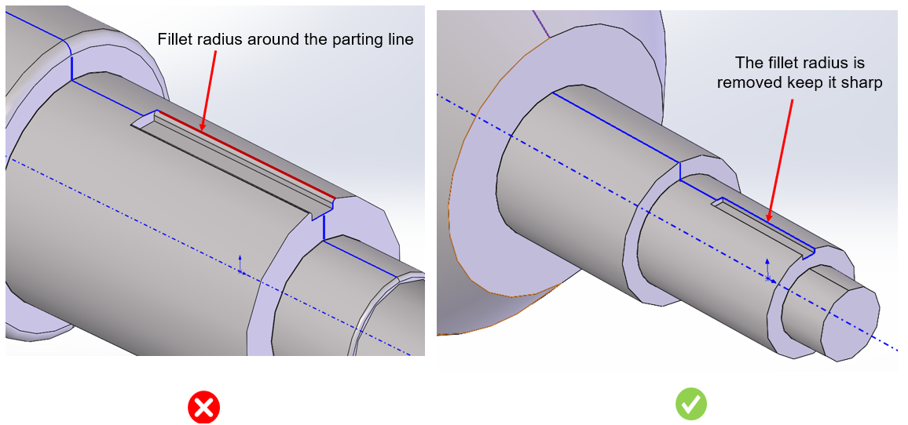

このルールは、パーティングラインがフィレット半径に接触しているかどうかを識別し、エラーとして検出します。
フィレット半径は曲面であるため、コア、キャビティ、またはサイドアクションの金型面を正確に一致させることが困難になります。金型コンポーネント間の不整合は、成形中に隙間や重なりを引き起こします。金型の不整合により、余剰材料（フラッシュと呼ばれる）がパーティングラインの隙間へ流れ込む可能性があります。フラッシュは表面仕上げに影響を与え、追加の後処理が必要となるため、生産コストと時間が増加します。
一般的に、フラッシュ問題を回避するため、パーティングラインはシャープエッジに定義されます。
